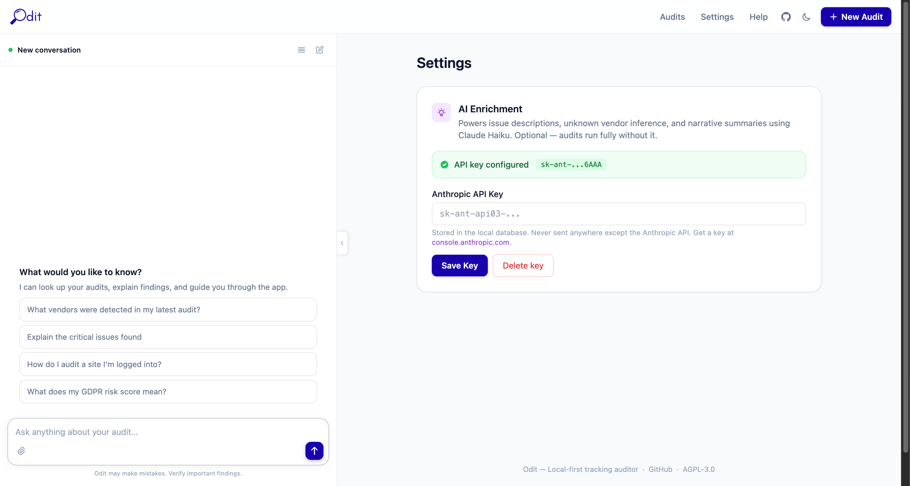

Help & Documentation
A complete walkthrough of every screen, tab, and button in Odit.
What is Odit?
Odit is a local-first website tracking auditor. It crawls any URL using a real browser, intercepts all network traffic, and produces a structured evidence report of every analytics tag, advertising pixel, consent mechanism, and third-party vendor it finds — including AI-powered analysis of exactly what data is flowing.
Evidence-based
Every finding is backed by real network requests captured live — not guesswork.
Local & private
Everything runs on your machine. No data leaves unless you export it.
AI-augmented
Claude reads actual request payloads — detects PII, identifies data flows, explains risks in plain English.
Starting an Audit

The New Audit form — field by field
URL to audit
Enter the full URL including https:// — e.g. https://example.com. Odit crawls from this starting page and follows all internal links.
Max pages
How many pages to crawl. Default is 50. Raise this for large sites; lower it for a quick spot-check. Each page adds ~3–5 seconds of crawl time.
Consent behaviour
No interaction — crawl without touching any consent banner. Best for seeing what fires before consent. Accept consent — automatically click "Accept" on cookie banners. Reject consent — click "Reject/Decline". Compare results across modes to verify your consent gate works correctly.
Audit as logged-in user
Enable this if the site has a login wall. Odit will open a real browser window — log in manually, then click Continue in Odit. The crawler will then inherit your authenticated session.
Start Audit button
Submits the job. The page transitions to a live crawl view showing screenshots and progress in real time. Most audits complete in 2–5 minutes depending on page count.
Audits list
Previous audits appear in the left panel. Click any audit to reopen it. The coloured dot shows status: completed, running, failed.
Audit Detail Page — Layout Overview

Header bar (top)
Shows the audited domain, timestamp, page count, and consent mode badge. The coloured status pill (Completed / Running / Failed) updates live during crawls.
Download buttons — Excel · HTML · MD · JSON
One-click export of the full report in your preferred format. These appear as soon as the crawl finishes. Excel is the most complete (9 worksheets).
Delete button
Permanently removes this audit and all its data. Cannot be undone.
Re-run AI button
Regenerates the AI Audit Brief using the latest Claude model. Useful if you updated your API key or want a fresh analysis.
Left panel — AI Assistant
A persistent chat panel available on every page. Ask questions about the audit in plain English. See the AI Assistant section below for example prompts.
Right panel — Scrollable report
Contains the Executive Summary, AI Audit Brief, Issues list, Cookie Register, Performance by Vendor, and the Pages/Issues/Vendors explorer tabs at the bottom.
Executive Summary

Metric tiles
Pages
Total pages crawled successfully.
Vendors
Unique third-party vendors detected across all pages.
Issues
Total privacy/compliance issues flagged by the rule engine.
Critical
Number of critical-severity issues requiring immediate action.
Risk score badge
Critical
Critical issues found — immediate action required.
High
Significant issues — review before going live.
Medium
Moderate risk — worth addressing.
Low
Clean bill of health — minor gaps only.
GDPR / CCPA badges
Shows whether the audit was run with consent interaction. "Unverified — ran without consent interaction" means the audit used the default No Interaction mode — tracking fired was captured as-is, without simulating acceptance or rejection. To verify consent gating, run separate audits with Accept Consent and Reject Consent modes and compare.
Vendor category pills
Shows a count of vendors by category (e.g. 8 analytics · 8 pixel · 2 tag_manager). Click any pill to filter the Issues or Vendors tabs to that category.
AI Audit Brief
Appears below the metric tiles. Written by Claude after the crawl completes. Sections include: Tracking Inventory (a plain-English list of every vendor), Data Flows (which domains receive what data), Key Risks, and a Recommendations summary. Click Re-run AI to regenerate this at any time.
Issues Tab

The Issues tab lists every privacy and compliance problem found during the crawl, sorted by severity. Each issue card includes a title, description, likely cause, recommendation, and the affected URL.
Severity levels
Likely a legal violation or serious data leak — e.g. PII sent to a third party without consent, or a consent bypass.
Should be fixed before launch — consent violations, pre-consent tracking, missing legal documentation.
Worth investigating — configuration gaps, unclear vendor purposes, policy mismatches.
Informational best-practice recommendations with low privacy impact.
Issue categories
pre_consent_tracking
Tracking fired before the consent banner was interacted with.
no_consent_banner
No cookie consent mechanism was detected on the page.
pii_in_requests
Personally identifiable information found in a network request payload.
crawler_blocked
The site's bot protection blocked the crawler (e.g. Cloudflare, Akamai).
missing_vendor_declaration
A vendor was detected but is not listed in the cookie policy.
broken_tracking
A tracking request returned a 4xx/5xx error — tag may be misconfigured.
cross_border_transfer
Data sent to a vendor outside the user's jurisdiction without a valid legal basis.
missing_consent_record
Consent preferences are set but not being stored or transmitted correctly.
Vendors Tab

Every third-party vendor detected across all crawled pages. Each vendor gets its own card. Vendors with AI payload analysis show a detailed breakdown of what data is actually flowing.

Vendor name + category badge
The vendor's display name and its functional category (Analytics, Pixel, Tag Manager, Consent, Session Replay, A/B Testing, Other).
AI inferred badge (purple)
Indicates the vendor was identified by Claude from an unknown domain — not from the built-in signature database.
PII risk badge (red)
Shown when AI payload analysis detected PII being transmitted to this vendor. High or Critical means action is required.
Page count + Detection method
How many crawled pages this vendor appeared on, and how it was detected (domain, cookie, window global, script src, or beacon).
PURPOSE
A plain-English explanation of what this vendor does, derived from reading its actual network requests.
DATA COLLECTED
Chips listing the specific data types being sent — page URL, screen resolution, user agent, session identifiers, etc.
IDENTIFIERS ASSIGNED
Persistent identifiers assigned to the user (client IDs, cookie values, hashed emails). These are extracted directly from the request parameters.
PII DETECTED IN REQUESTS
Red block shown when actual PII was found in a request payload — e.g. a SHA256-hashed email sent to Meta Pixel via the hme parameter.
NOTABLE
AI observations about anything unusual — e.g. "fires with npa=0 but still collects behavioural data tied to a persistent client ID".
How vendor detection works
Odit matches network requests against a built-in signature database of 100+ vendors (domains, cookie names, window globals, script patterns). Unknown domains are sent to Claude for inference. After detection, Claude reads up to 8 representative requests per vendor in a single API call and generates the payload analysis — so the entire enrichment step costs roughly $0.02–$0.05 regardless of audit size.
Pages Tab

Every page crawled during the audit, with per-page metrics. Click any row to open the full page detail view.
URL
The full URL of the crawled page.
Status
HTTP response code — 200 is normal, 3xx is a redirect, 4xx/5xx indicates an error.
Requests
Total number of network requests captured on this page, including all third-party calls.
Vendors
Number of distinct vendors detected on this page specifically.
Issues
Number of issues flagged on this page.
LCP
Largest Contentful Paint — how long until the main content was visible. Under 2.5s = Good (green), 2.5–4s = Needs improvement (amber), over 4s = Poor (red).
CLS
Cumulative Layout Shift — visual stability score. Under 0.1 = Good, 0.1–0.25 = Needs improvement, over 0.25 = Poor.
Screenshot thumbnail
A live screenshot taken during the crawl. Click to enlarge. If the site blocked the crawler, the thumbnail will be absent.
Page detail view
Clicking a page row opens a full breakdown showing: every network request with URL, method, status, size, and timing; console events and JavaScript errors; vendors detected on that page; and page-level issues. This is the deepest level of evidence — useful for debugging specific tracking calls.
AI Assistant
The left panel on every page. Powered by Claude (Anthropic). Requires an API key set in Settings.
What the AI can do
- "Which vendors are firing before consent is given?"
- "Summarise the critical issues in plain English for a non-technical stakeholder"
- "Is this site GDPR compliant based on what you can see?"
- "Which pages have the most third-party requests?"
- "What data is Google Analytics collecting here and is any of it PII?"
- "Show me all vendors that set cookies without a consent banner"
- "Navigate to the Issues tab and explain the top 3 critical findings"
- "Download the Excel report and tell me the top risks"
Setting up your API key
Go to Settings, paste your Anthropic API key (starts with sk-ant-), and click Save.
The key is stored only in your local database and never transmitted to anyone except Anthropic's API directly.
No API key? All core features work without it — crawling, vendor detection, issue rules, cookie register, performance metrics, and all exports. AI is only needed for natural-language Q&A, AI Audit Briefs, and vendor payload analysis.
AI sidebar controls
Chat input
Type any question about the current audit. The AI has access to the full report context — vendors, issues, pages, requests, and cookies.
Attachment icon (paperclip)
Upload a file to ask questions about it — e.g. a cookie policy PDF or a screenshot to compare against.
Suggested prompts
Quick-action buttons that appear before you start a conversation. Click any to instantly ask that question.
History icon (top of panel)
Opens the full conversation history for this audit session.
Edit icon (pencil)
Start a new conversation, clearing the current thread.
Settings

Access Settings via the top navigation bar. There is currently one setting:
Anthropic API Key
Paste your key from console.anthropic.com and click Save. Once set, all AI features activate automatically: AI Audit Brief, vendor payload analysis, PII narrative, and the chat sidebar. The key is stored in your local Postgres database only — it is never sent anywhere except Anthropic's API on your behalf. To remove AI features, delete the key and save.
Dark mode toggle
The moon/sun icon in the top-right navigation bar toggles between light and dark mode. Your preference is saved in the browser.
Export Formats
Download buttons appear at the top of every completed audit. All exports are generated at the end of the crawl and stored locally.
Excel (.xlsx)
9-sheet workbook: Summary, Vendors, Issues, Pages, Requests, Events, Cookies, Performance, Comparison
Best for: Sharing with stakeholders, compliance documentation, pivot tables
HTML Report
Self-contained single-file report with full styling — no Odit installation needed to view
Best for: Sending to clients or embedding in intranets and portals
Markdown (.md)
Structured text with tables, headings, and code blocks
Best for: Pasting into Notion, Confluence, GitHub wikis, or internal docs
JSON
Full machine-readable audit data including all vendors, issues, pages, and request details
Best for: Feeding into automation pipelines, SIEM tools, or custom dashboards
Troubleshooting
Audit stuck on "Running" and not completing
docker compose ps. The worker container handles crawling — if it has exited, restart with docker compose up -d worker. Check logs with docker compose logs -f worker.Audit completes but shows 0 vendors / 0 issues
docker compose ps and ensure the proxy service is healthy. Restart with docker compose up -d proxy.AI features not working / no AI Audit Brief
sk-ant-. AI calls go directly from your machine to Anthropic's API over the internet.Export buttons greyed out or missing
docker compose logs worker.Site blocking the crawler (bot protection)
Crawling fewer pages than expected
How do I compare two audits?
How do I reset / wipe all data?
docker compose down -v. This removes the database volume. The ./data folder (screenshots, exports) must be deleted manually. This is irreversible.License & Data Privacy Notice
License — GNU AGPL v3.0
Odit is free, open-source software released under the GNU Affero General Public License v3.0. You are free to use, modify, and distribute this software subject to that licence. If you deploy a modified version as a network service, you must make the modified source code available under the same licence.
No Warranty
This software is provided "as is", without warranty of any kind. The authors are not liable for any damages, data loss, regulatory penalties, or legal consequences arising from use. Always verify findings independently before relying on them for compliance decisions.
Your API Key — Your Responsibility
Your Anthropic API key is stored locally in your database and used only to make requests directly to Anthropic's API from your machine. Odit does not store, proxy, or transmit your API key to any third party. You are responsible for your API usage costs and compliance with Anthropic's usage policy. Treat your key like a password — if compromised, rotate it immediately in your Anthropic console.